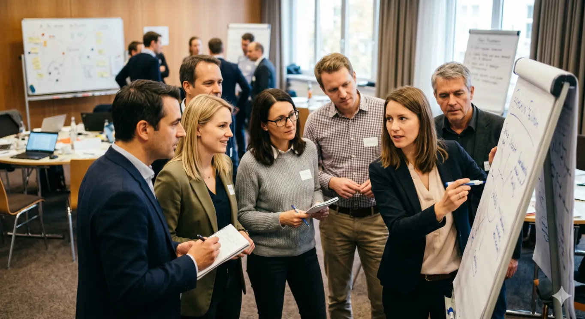

It's not that there is too little knowledge. The lack of application and implementation of the learnings into one's own individual context is too weak.
Leadership development happens over time. Turning the learnings into behavior requires practice. Our customized Learning Journeys are designed to ensure openness for the new, self-awareness, deep reflection, and habit change.
We will challenge your leaders. If we see complacency, we will confuse them. If we see a lack of courage, we will encourage them to demonstrate uncomfortable behavior. In any case, we will get them out of their comfort zones. This is where learning happens.
We enable holistic and comprehensive learning by combining elements such as face-to-face modules, virtual deep-dive modules, psychometric tools, curated visits to state-of-the-art companies with intensive experience exchange, learning partnerships, networking, and digital learning platforms. We would be happy to discuss specific examples with you.
We tailor the program to your needs.
You might be planning a program for the 200 Senior Executives of your company, for your 50 Top Talents, or for the 25 Top Executives.
We will surprise you and your leaders with a stunning mix of input, experience, networking, fun and excitement. We designed & delivered fresh programs for BMW, Bayer, EY, Montblanc, ZEISS and many more. Curiosity counts — ask us for details and examples.
What clients say
"The experts of the Munich Leadership Group have been supporting us for years in the consistent further development of our corporate culture. Trainings and workshops are optimally addressed to the respective target group, whether at the factory or at any management level. We have very much benefited from working with the MLG."
Baldassare LaGaetana, CEO, Aqseptence